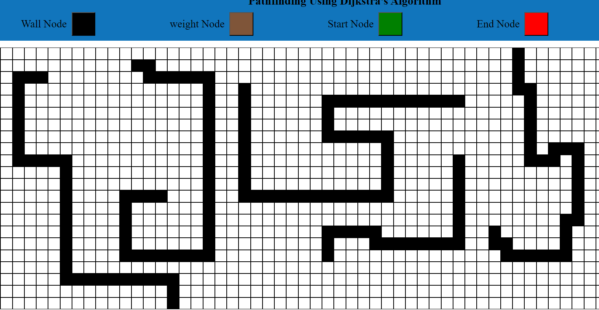
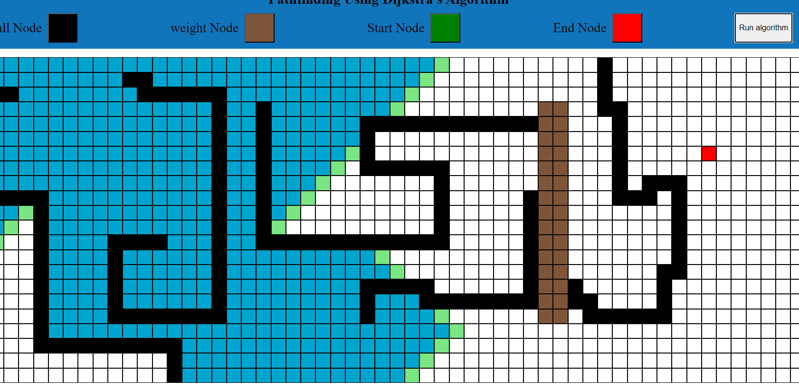
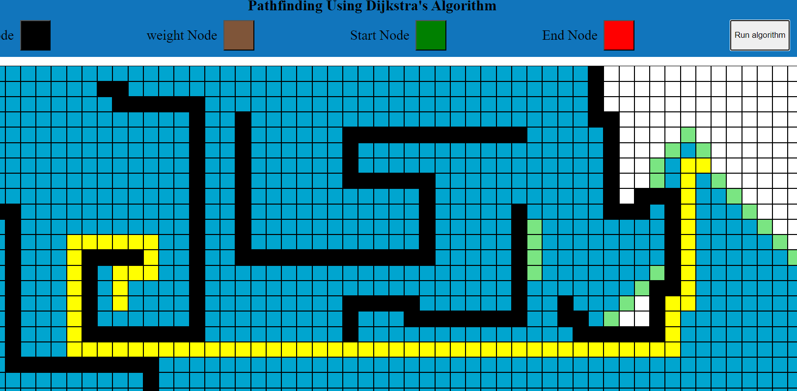
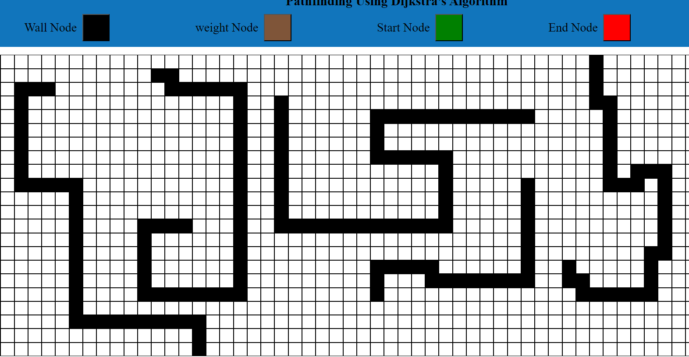
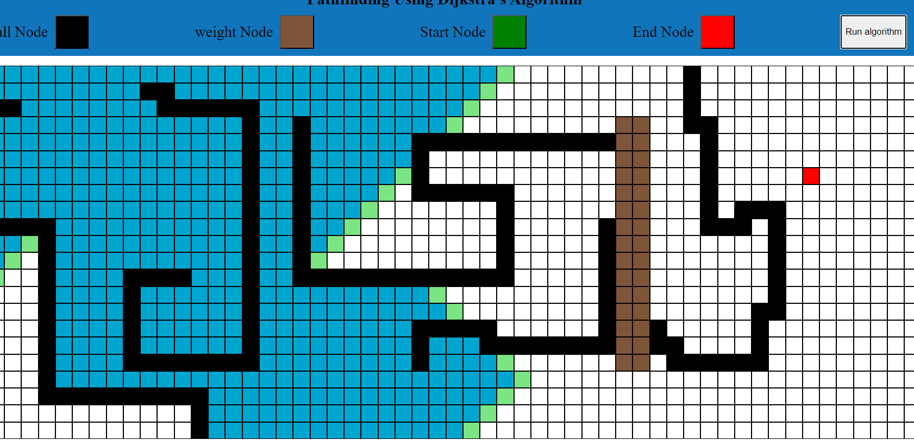
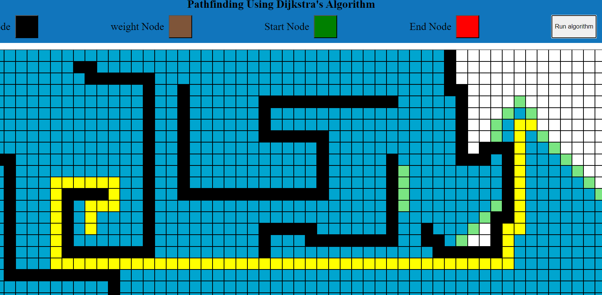

Pathfinder
Embark on a journey of exploration and optimization with the Pathfinder project, a JavaScript-based endeavor that leverages Dijkstra's algorithm to illuminate the shortest paths within a graph.This project seamlessly blends efficiency with simplicity, allowing users to interactively visualize the algorithm's traversal of nodes and edges. The JavaScript code is meticulously crafted, ensuring clarity and ease of understanding, making it accessible to both learners and seasoned developers.